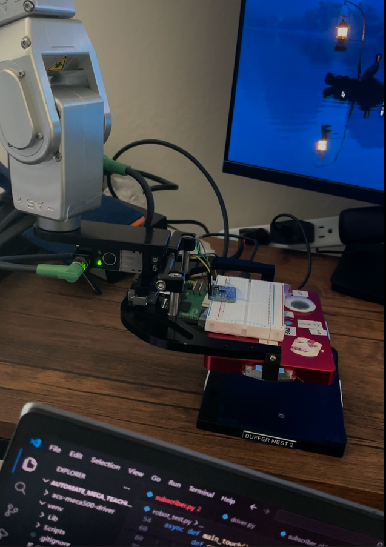
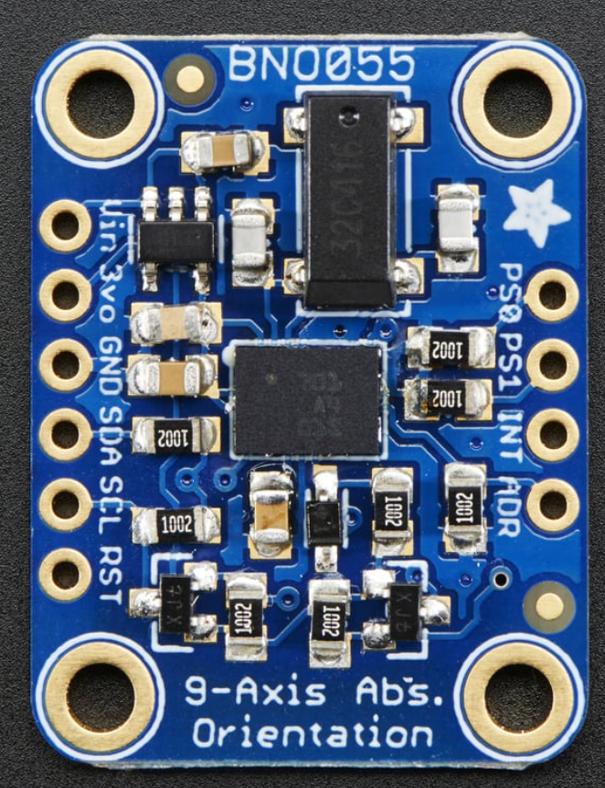
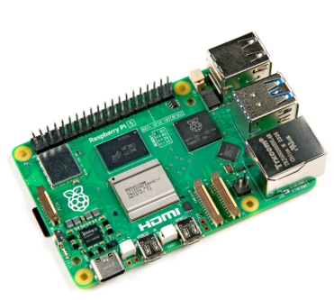
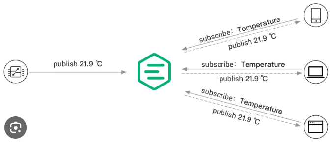
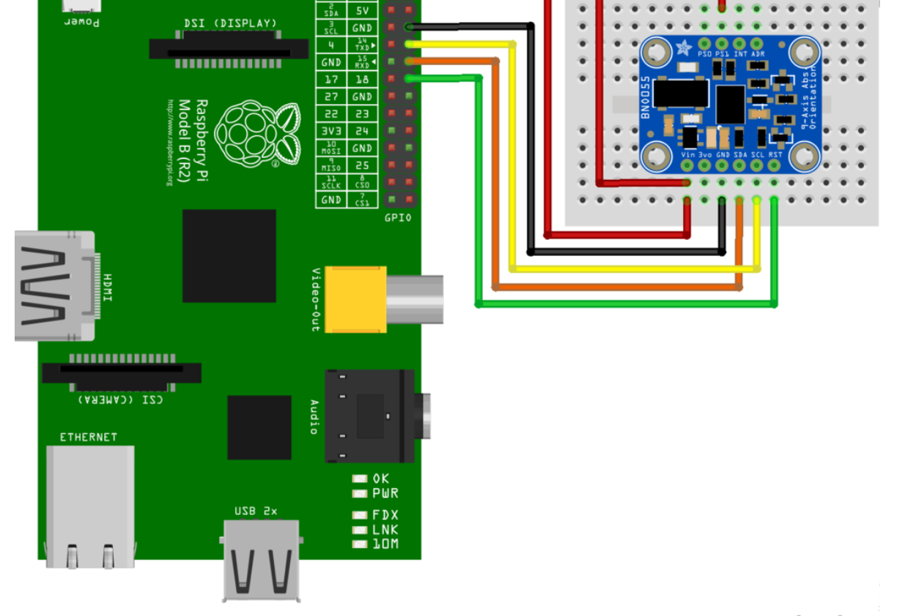

ROBOTICS · SENSOR INTEGRATION · AUTOMATION
Auto-Leveling Robot Arm using IMU Sensor
A sensor-driven robotic control system using a BNO055 orientation sensor, Raspberry Pi, MQTT communication, and a robot driver to adjust the robot arm's orientation.
Overview
This project explores auto-leveling a robotic arm using real-time orientation data from an external sensor. A BNO055 orientation sensor provides Euler-angle measurements, which are transmitted through a Raspberry Pi to a robot driver for orientation control.
Why Automate Leveling?
Automating orientation adjustment reduces the need to manually align the robot arm. The project investigates how external orientation feedback can be incorporated into robotic motion control.

System Architecture
The Raspberry Pi reads sensor orientation measurements and publishes them through MQTT. The robot-side subscriber receives the data for the auto-leveling workflow.
Orientation Sensor
The orientation sensor combines accelerometer, magnetometer, and gyroscope measurements. This project uses its Euler-angle orientation outputs: Rx, Ry, and Rz.

Raspberry Pi Microcontroller
The Raspberry Pi runs an operating system from an SD card and supports Linux and Python. Its GPIO interface is used to communicate with the orientation sensor.

MQTT Communication
MQTT (Message Queuing Telemetry Transport) is used to communicate sensor measurements between devices.
Publisher
A Python process running on the Raspberry Pi publishes orientation data to an MQTT broker using a designated topic.
Subscriber
A process running with the robot's MECA driver in Docker subscribes to the sensor data and receives the published measurements.

Hardware Wiring
| BNO055 Pin | Raspberry Pi Connection |
|---|---|
VIN
|
3.3V power |
GND
|
Ground |
SDA
|
SDA pin |
SCL
|
SCL pin |

Sensor Data Publisher
The Raspberry Pi reads Euler-angle measurements from the BNO055 orientation sensor and publishes them over MQTT for the robot-side application to consume.
Robot Driver Subscriber
The MQTT subscriber runs on the robot side, associated with the MECA driver in Docker. It receives published sensor orientation measurements for use by the auto-leveling routine.
Auto-Leveling Workflow
The auto-leveling workflow uses incoming orientation measurements to adjust the robot arm's orientation. The system connects sensor feedback, network messaging, and robot control into a single workflow.
- Read Orientation: Obtain Euler-angle measurements from the BNO055 sensor.
- Publish Measurements: Send orientation measurements from the Raspberry Pi using MQTT.
- Receive Sensor Data: The robot-side subscriber receives the published orientation values.
- Adjust Robot Orientation: Use the received orientation measurements in the robot arm's auto-leveling workflow.
Demo
Demonstration of the orientation-sensor-driven auto-leveling robot arm, showing the integration of the sensor, Raspberry Pi, MQTT communication, and robotic motion.